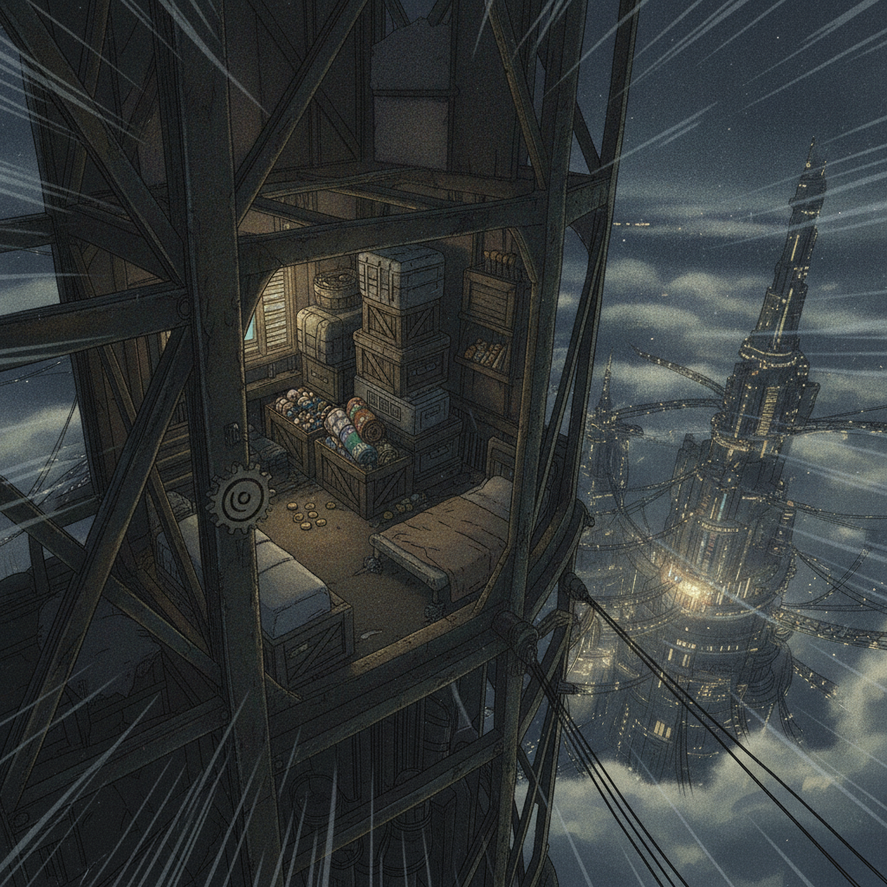
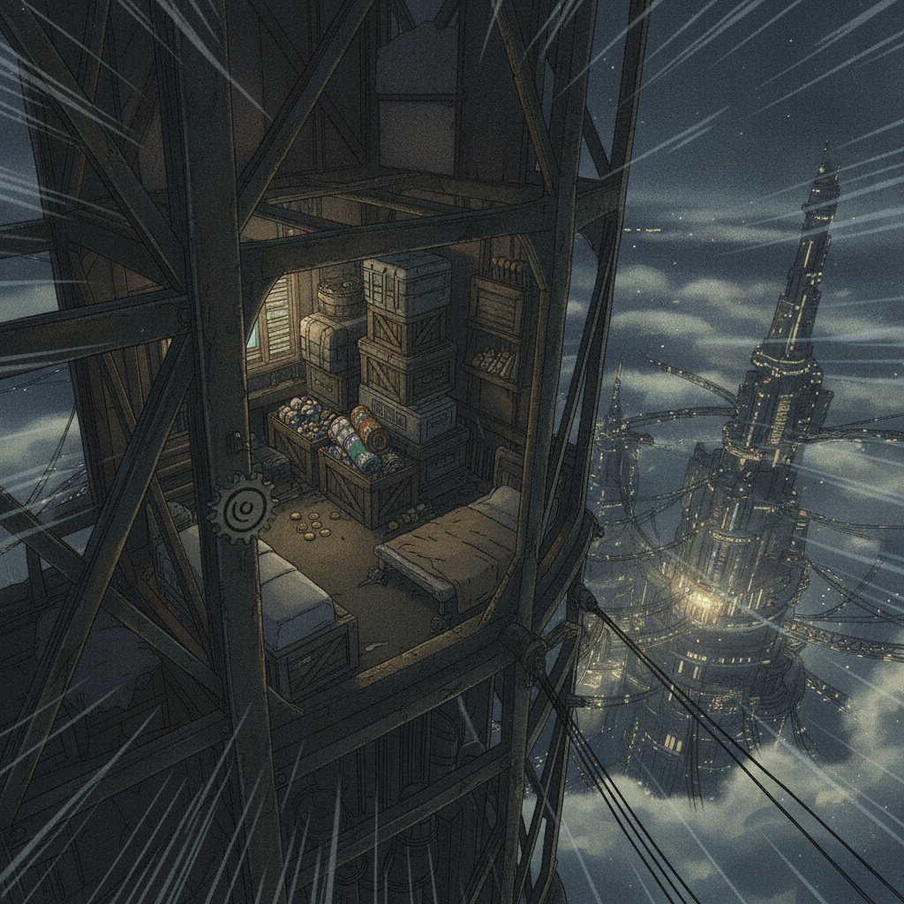
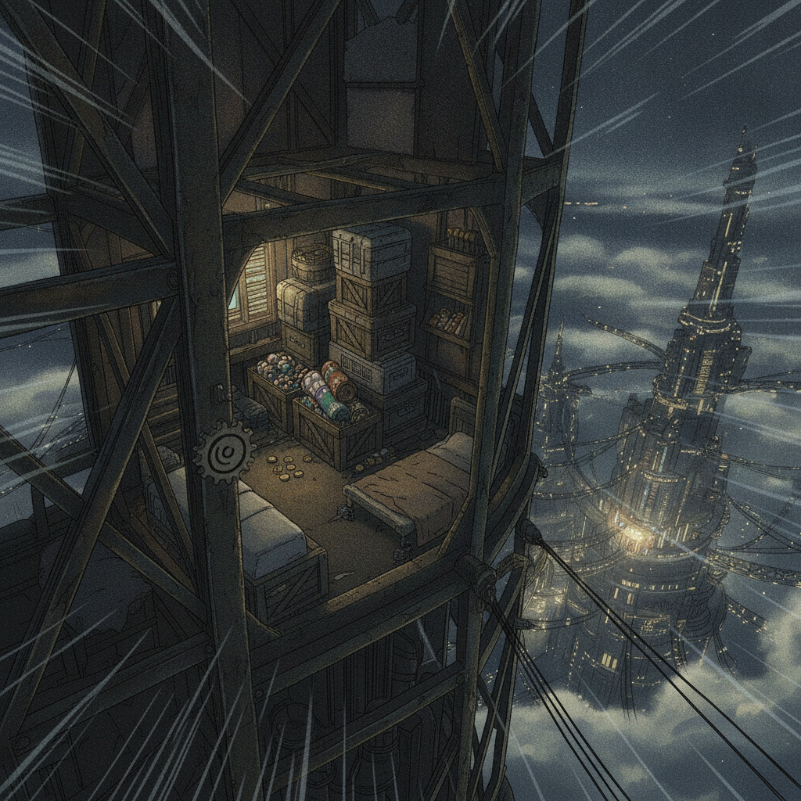

Vengeance is a powerful magnet. I find them one by one, scattered across the broken world. Wren, in the smuggler-nets. Isolde, turning her Assayer knowledge inward. Seraphine, reading the courts for weakness. Ember, arming the desperate.

I bind each to me. Not with lies, but with a terrible, genuine promise: I can keep them all alive where the world could not. Shared vengeance becomes a foundation.

All four come to love me. And for the first time, I let myself love all four. It is genuine, which is what makes it so dangerous. My love is total. So my vengeance will be total.